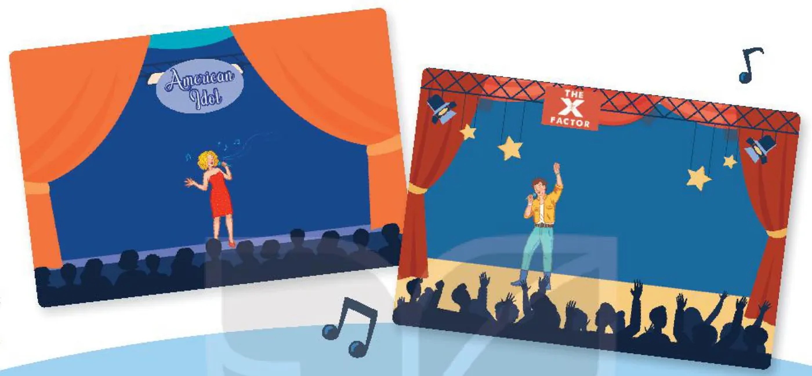
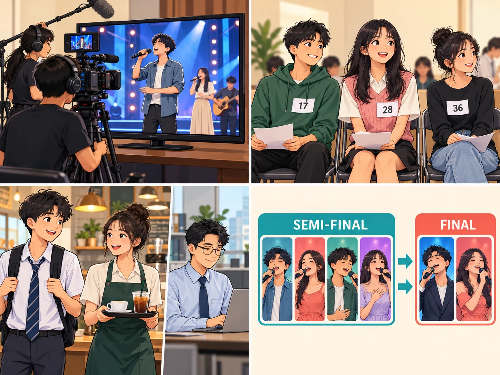
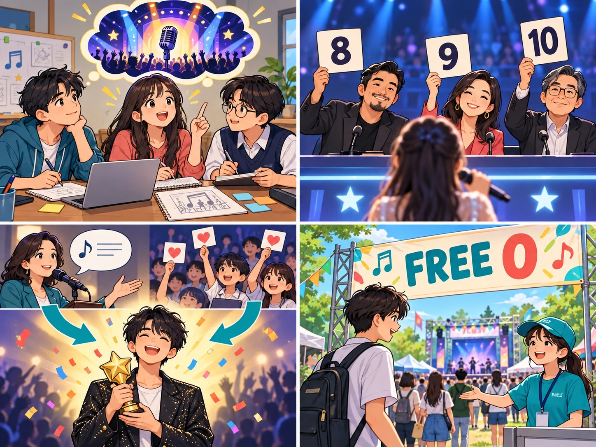

American Idol
Lesson 3 — Reading
3Five stops in 45 minutes
- 📺
Warm-up
What are these shows?
4 min - 🔤
Before
Six words + game
10 min - 📖
While
Tasks 2 and 3
20 min - 💬
After
Join Vietnam Idol?
8 min - 🏠
Wrap-up
Homework
3 min
By the end of this lesson…
- 🔎
Guess meaning
Work out highlighted words from the context.
- 📖
Read for details
Find specific information about a TV music show.
- 💬
Give reasons
Say if you want to join Vietnam Idol and why.
What are these shows?
Task 1 · pair talk
4 minutesWhat are these shows? What do you know about them?

Look at the logos. American Idol (US) and The X Factor (UK) — TV singing competitions.
Before you read
Six words · The Masked Mic
10 minutes
reality
(n) /riˈæləti/ thực tế (truyền hình thực tế) Reality TV shows often feature ordinary people.participant
(n) /pɑːˈtɪsɪpənt/ người tham gia, thí sinh Each participant sings one song in the show.ordinary
(adj) /ˈɔːdnri/ bình thường Ordinary people can enter the singing competition.semi-final
(n) /ˌsemiˈfaɪnl/ vòng bán kết The semi-final comes before the final.
vote
(v) /vəʊt/ bình chọn, bỏ phiếu Viewers can vote for their favourite singer.
play a role in
(idiom) /pleɪ ə rəʊl ɪn/ đóng vai trò trong Judges play a role in choosing the winner.While you read
American Idol · page 31
20 minutesAmerican Idol · paragraph 1
American Idol was shown for the first time on television in January 2002. At that time, there were many movies and TV series, but no reality competitions on TV. The participants in this programme are ordinary people who the audience can really identify with.
American Idol · paragraph 2
First, judges travel all round America in search of the best singers and bring them to Hollywood. Twenty-four to thirty-six participants are then chosen to go on to the next stages where they perform live on TV, and receive the judges’ opinions. From the semi-final onwards, people over 13 and living in the US, Puerto Rico or the Virgin Islands can vote for their preferred singers online or through text messaging. The singer with the lowest number of votes is eliminated. On the final night, the most popular singer becomes the winner of that American Idol season.
American Idol · paragraphs 3–4
People watch American Idol not only to see the participants sing, but also to hear the comments of the judges, who play an important role in the competition. Their different opinions and interesting arguments make the show very exciting.
The first season of Vietnam Idol was shown in 2007. It included three stages: short performances to choose participants, semi-finals and finals. The winners of the show’s different seasons have become famous singers in Viet Nam.
Match the highlighted words with their meanings
1. series b
2. identify with a
3. in search of d
4. eliminated c
a. feel that they are similar to and can understand them
b. a set of TV or radio programmes on the same subject
c. removed from the competition
d. looking for
Read again · question 1
1. What is American Idol? B
A. A game show on TV
B. A TV singing competition
C. A live dancing competition
Read again · question 2
2. Which of the following statements is correct? A
A. From the semi-final, singers who can go to the next stage are decided by the audience vote.
B. The judges choose as many singers as they can.
C. People around the world can vote for the songs they like.
Read again · question 3
3. Who wins American Idol? A
A. The singer with the highest number of votes on the final night.
B. The singer with the highest number of votes and highest score from the judges.
C. The singer with the highest score from the judges.
Read again · question 4
4. Which of the following statements about the judges is NOT mentioned? C
A. They give comments after each live performance.
B. They have different views about the singers’ performances.
C. They are not in favour of choosing ordinary people.
Read again · question 5
5. What can be inferred about the competition in Viet Nam? C
A. The audience decides who makes it to the final stage.
B. All the singers will be famous.
C. It can help develop participants’ singing careers.
After you read
Task 4 · pair work
8 minutesDo you want to participate in Vietnam Idol?
Yes, because…
I can develop my singing career. · I can become famous. · I will get the judges’ comments.
No, because…
I’m not talented enough. · It’s stressful to perform live on TV. · I need time for my studies.
I would / wouldn’t like to join Vietnam Idol because …
What have you learnt today?
Today’s board
Words: reality · participant · ordinary · semi-final · vote · play a role in
From the text: series · identify with · in search of · eliminated
Homework: learn the new words; write 3 sentences about a TV music show you like; prepare Lesson 4 — Speaking (page 32).